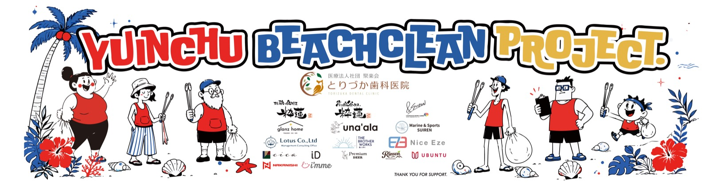
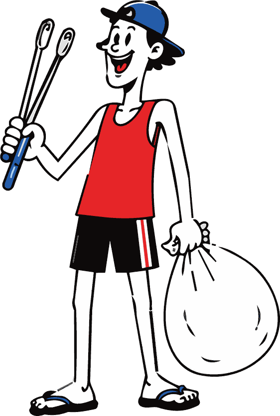
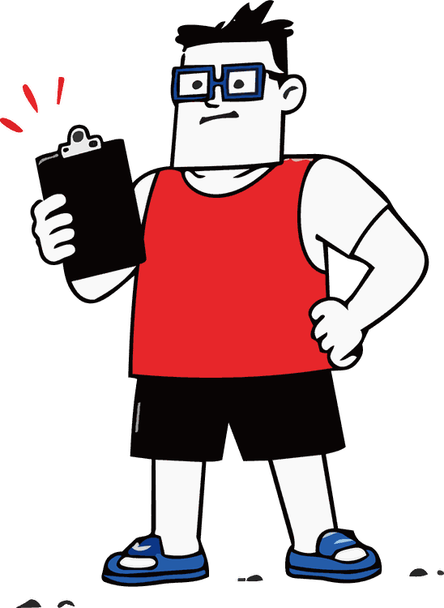
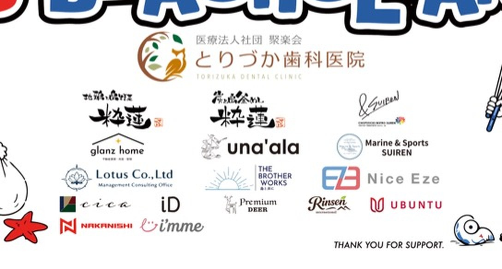
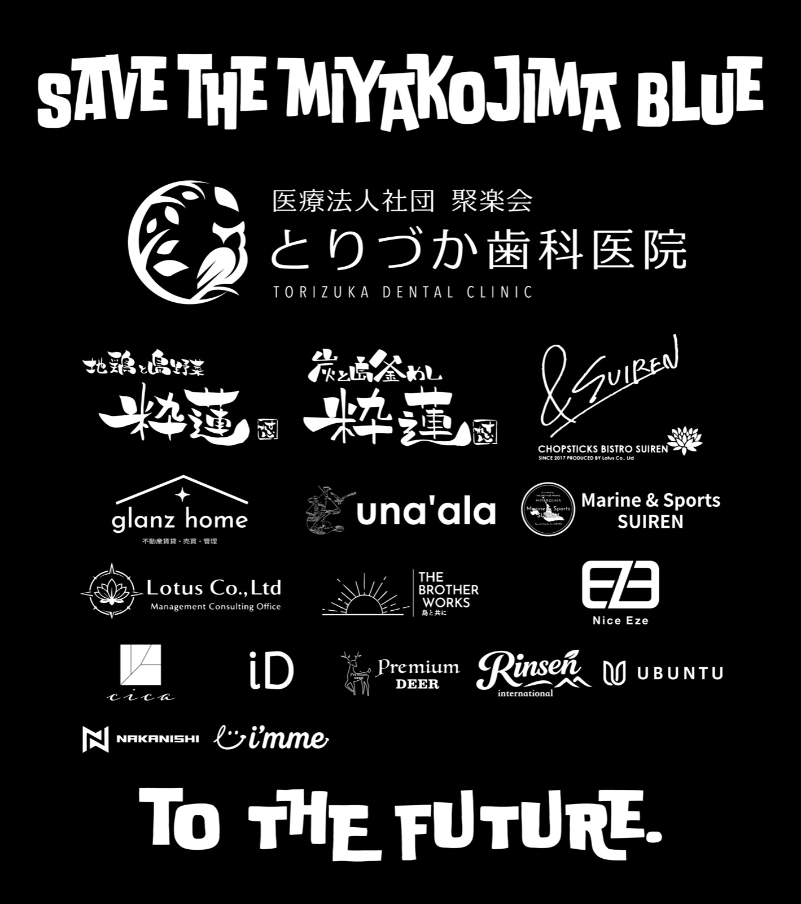

Partner with us.
年間
スポンサー
1年間を通して活動を支えてくださる、個人・法人を問わないパートナーです。お名前とロゴは活動当日の横断幕・Tシャツと、公式サイトに掲載します。一緒に島の未来をつくってくださる、パートナーとしての「支援の証」です。




どこに載るか
掲出先は、活動当日に使う2つの制作物です。上にあるほど大きく、下にいくほど小さくなります。
タペストリー / 横断幕
2600mm × 600mm

いちばん上が MAIN。そこから下へ GOLD、SILVER、BRONZE と続き、いちばん下に企業名の一覧が入ります。
会場の目印になる横断幕です。ロゴは中央下部にまとめて配置します。遠くから見たときの分かりやすさを優先しています。
Tシャツ背面
S / M / L / XL

参加者が当日着るTシャツの背面です。近くで読まれるので、文字の読みやすさを優先して配置します。上から順に MAIN → GOLD → SILVER → BRONZE。並び方がそのままランクの差です。
掲載サイズはランクごとの最大表示枠の目安です。ロゴの縦横比・余白・全体のバランスにより調整させていただく場合があります。
支援のかたち
5つの区分があります。金額が大きいほど、大きく掲出されます。
Tシャツ背面の最上部と、タペストリー中央。掲出物でいちばん大きく載ります。
上位のロゴ枠。ロゴ単体として認識しやすい大きさです。
中段のロゴ枠。見やすさと掲載数のバランスを取った区分です。
下段のロゴ枠。小さめの掲出になるため、シンプルなロゴが向いています。
ロゴ枠ではなく、支援企業名の一覧としてお名前を掲載します。
どのランクにも共通する特典
- オリジナルTシャツの進呈
- オリジナルスポーツタオルの進呈
- 活動時に掲示するタペストリーへ、企業名・個人名を掲載
- YUINCHU 公式サイトへ、企業名・個人名を掲載
金額はいずれも年額です。詳しい掲載サイズとロゴデータの入稿ルールは、加盟ガイダンス資料でご案内します。
申込から
掲出まで
- ご希望のランクをお選びいただきます
- お申し込みと、協賛金のお支払い
- ロゴデータをご提出いただきます
- 事務局で版下を調整します
- 掲載イメージをご確認いただきます
- 制作し、活動当日に掲出します
掲出物の更新は年1回です。期の途中でお申し込みいただいた場合は、ご入金の確認をもって次の期のスポンサーとしてお迎えします。
Let's keep it blue.
まずは
ご相談ください
掲出物の詳しい仕様や、ロゴデータのご相談も承ります。加盟ガイダンス資料は、下のボタンからその場でご覧いただけます。